Advisor: Prof. Dr. Eduardo Guerra (unibz) [eduardo.guerra@unibz.it]
Co-advisor: MSc. João Francisco Lino Daniel (unibz) [joao.daniel@alumni.usp.br]
Introduction
The concept of building application with a set of loosely coupled services emerged in 1997 on IBM's Enterprise Java Bean (EJB). But was only with the REST APIs grow at early 2010s that microservice were popularized as an established architecture for large systems that requires fast pace growth, continuous integration and scalability.
As a recent software architecture style, there is a lack of formal knowledge and experimentation in some areas, such as around its patterns and their API interfaces, inter-service communication and data management.
It is also, commonly considered a hard to maintain architecture, because of the difficult to collect metrics around multiple components and track their health. That may cause services to deviates from its non-functional requirements and degrades over time, creating systems that under-perform and are not developer-friendly.
For these reasons, this work aims to compare multiple microservice patterns, from a developer and architect point-of-view, exploring their trade-offs and use cases, regarding their contracts, communication and data management. At the end, generate formal knowledge about it, in the form of definitions, good practices, metrics, and development experience, based on a set of implementation examples attached to the final delivery.
Literature Review
Metrics
Metrics are a representation of an object’s characteristic as a numeric value. In association with units of measurement and thresholds, metrics are used to describe the object and also to assess it.
In software development, metrics are used to describe many aspects of a system, from objective characteristics – like response time and CPU usage, that have standards and well-defined ways of measurement –, to subjective ones – like code quality and software maintainability, which can be measured by several methods, each one of them with its own efficiency and accuracy.
The assessment made with metrics can go in different directions, such as to track if a certain goal has been achieved, or to follow if a specific requirement is being respected. In general, different metrics can be used to assess a single characteristic, but the choice depends on the goal of the analysis. For example, to represent the degree of coupling between modules A and B, we can use the static number of function calls, or we can use the dynamic number of calls per minute during execution.
Software Architecture
Software Architecture is an area of study in computer science that focus on the software structures, their benefits and drawbacks, and how to integrate them to solve problems.
The architecture of a software is what describes which set of structures are used to build a system, encompassing its components, principles, responsibilities and design decisions. It doesn't necessarily establish implementation details, like technologies, design patterns and intra-component architecture, it depends on the level of detail and how big is the whole structure. However, all decisions taken in the architecture should be all necessary to reason about the software and its implementation.
Non-functional Requirements
When defining a software's architecture, there are a set of requirements that should be fulfilled, so the software solves the problem it was intended to. These requirements can be split in two groups: functional and non-functional. Functional requirements describe what the software should do, the behavior. Non-functional requirements define how this should be done, the qualities.
Non-functional requirements should be as well-defined as the functional ones. For example, a live chat API should allow two users to interact with each other at the same time, with a maximum 500ms delay to message deliver. This not only defines what is the API functionality, but also that it should be performant, and this requirement is as important as the functionality, since an API with slow response time does not fully solve the problem.
Evolvability
Defined as the capacity of a system or being for adaptive evolution. It is used in software architecture context to describe software that can maintain its qualities over time, while being supporting changes and adaptations.
Although, several requirements are used to define software that can adapt to different type of changes, as flexibility that states for the capacity to adjust in different context, extensibility as the requirement to adapt and receive new features, and adaptability, the aspect of software that adapts to changes that doesn't change its functionality. Evolvability is the unique requirement that considers time when concerning about changes.
Software degrades over time. As an example, over development time, software can deviate from its main aspects and requirements due to multiple reasons: short timelines, lack of planning, etc., many of them related to people management. Evolvability is the quality of a software component to adapt to changes from different contexts; technical, business, operational; and keep the same priorities and aspects.
Microservices
In the past, the development of a software system could be explained as a line, with planning, beginning and an ending delivery. With technology advances, continuous delivery emerged, turning this process into a cycle that can be repeated without never reaching a final delivery. In this scenario, companies started to have problem scaling large monolithic applications, because they require knowledge about all the system for changes, this knowledge usually ended up concentrated in a few developers that took part on the building of the application. This leads to business changes being held by engineering limitation. Microservice comes up as a solution that allow fast pace development in large systems and fits better the necessities of a fast delivery market.
Microservice is a software architecture style, in which, the responsibilities and business functionalities are split into independently deployable components, each component has its own codebase and is called a "microservice". These services communicate through APIs, Application Programming Interfaces, these interfaces work as contracts, containing rules, protocols and tools, that other services may follow to be able to communicate with it.
Microservices components follow the rule of single responsibility, each component is responsible for doing only one thing and must do it well. This allows organizations to split the concerns in multiple cores, each with its own sets of services where the ramp up and specialization is easier, since it can be focused on specific area. For example, a common split of teams on big techs is in functional areas: mobile client, web client, data management, back-end development, etc.
It also allows splitting the decision in multiple layers. While a software architect may be responsible for defining which services take part of a certain flow, and what are their responsibilities, the technical and design decisions of implementation can be made by the maintainer development team, since each component is technology independent.
Another advantage of microservice is scalability and extensibility. As components are independent, you can cut cost by scaling only the required components at a time. It also means that, adding a new feature can be as easy as creating a new independent service and attaching it to the architecture.
However, this architecture relies on inter-components contracts, which means that any break in a contract can lead to a cascade of unwanted behaviors that require lots of tracking and measurements to debug. It also requires an increase in design complexity and operational cost due to the necessity of handling multiple services, their deployment and integration.
Methodology
The goal with this work is to compare multiple microservice patterns and generate formal knowledge about them, taking in consideration designing, developing, and executing them. It is also to explore more about microservices metrics when comparing them in regard to evolvability.
To do so, we will implement multiple microservices components, based on different patterns, to be compared in similar scenarios and uses. These scenarios are based on evolvability concepts, it means that each scenario is based on changes. To take the most out of each example, we may implement a base service following a pattern and then add the change requirement to observe how this pattern handles a specific type of change. Since each scenario focus on a single aspect of the architecture, the implementation will be solely on the scope of the evaluation, the rest of the application may be mocked to speed up development time. Then, we will be able to gather information and measurement around its usage, implementation, contract, communication and fitness with other components.
This will be done in cycles of development, in each cycle one scenario will be explored. The workflow is made of the following steps: conceptualization of the scenario and its evaluation strategy; development process, where the base service and the change aspect are implemented; collection of the metrics, where we will collect metrics around the non-functional requirements; analysis, where we will compare them and face the results; report, write a report about the results of the comparison to the final delivery.

For example, one of the scenarios we are studying is API extensibility. We envision comparing two approaches to the API: one with a specific operation that enforces strong types for the data; another with parameterized operation that accepts loosely defined data structures. To evaluate how extensible each approach is, we will focus on the number of changed lines-of-code, in particular how much impact the new feature had on the existing one, and the learning curve declared by the developer. After it, the implementation follows in two steps, the base application and the addition of a new feature. Then we collect the metrics defined on the scenario's conceptualization and report the analyzed results.
With this cycle, we will be able to produce the final report in parts during the year. As each scenario is independent of each other, each cycle will be a concrete contribution. There are currently two scenarios we are studying: extensibility, as discussed in the example before, and flexibility, design APIs communication to enable extension on any of them without requiring changes on the APIs it communicates with. It is likely that new scenarios will emerge as we experience more with evolvability, and the implementation order may change as we develop more relevant scenarios.
At the end of this work, it is expected to produce a comparative between multiple Microservice applications patterns, regarding performance, development experience, code quality, software maintainability, and others. Also, formal knowledge about these patterns, their use cases and trade-offs, alongside implementation examples.
Additionally, we expect to propose a set of metrics around evolvability and seamless evolution that can be used to assist decision-making and assessment of microservice architectures.